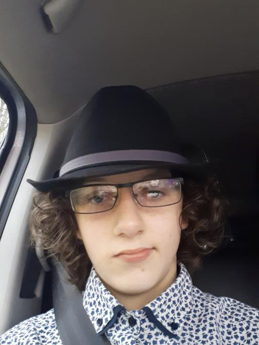

Former node.js Developer Leon P. Keates is a 15 year old developer, born in 19/12/2005 in Gosport, United Kingdom. He lives in Somerset right now, but he still goes to school. His hope is to be a developer and so on. Since the 2019-present COVID-19 pandemic, Leon has been doing his work and so on. Also, Leon does have PTSD and Autism, but he says "I am not alone".
hello